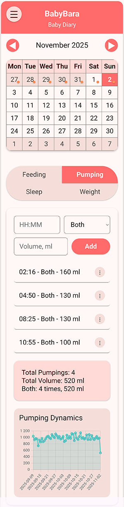
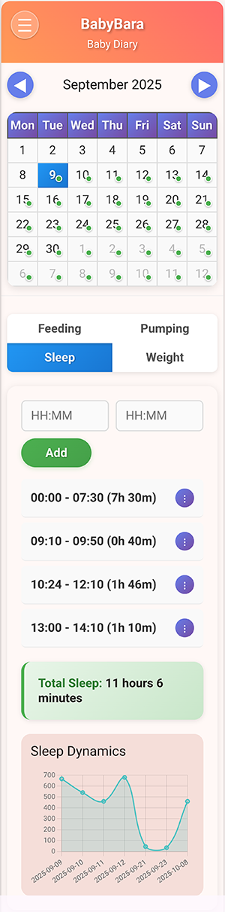
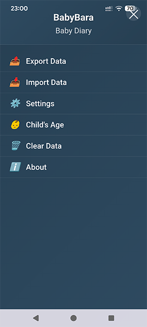
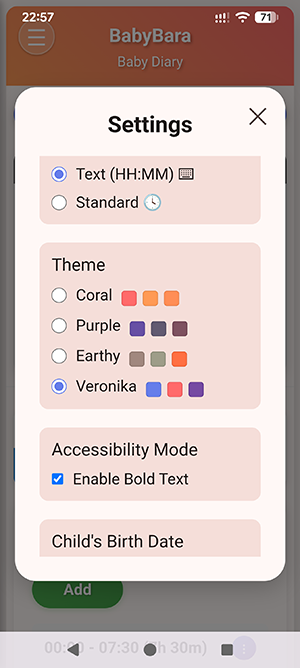

BabyBara
Baby tracking application
Monitor and record breast pumping, feeding patterns, sleep schedules, and growth metrics. With a clean, intuitive interface and multiple theme options, track your baby's development while keeping all data securely stored on your device.
Features
Tracking Capabilities
Feeding Tracking
Record breast milk, formula, and water intake with time and volume
Breast Pumping Tracking
Monitor pumping sessions with breast selection and volume
Sleep Tracking
Log sleep periods with start and end times
Weight Tracking
Track baby's weight growth over time with visual charts
Analytics & Visualization
Interactive Calendar
Monthly calendar with visual indicators for days with data
Daily Statistics
Comprehensive summaries for each category every day
Data Visualization
Dynamic charts showing trends and patterns over time
Age Calculator
Automatic calculation of child's age based on birth date
Customization & Management
Multiple Themes
Choose from various color themes for personal preference
Accessibility Options
Bold text option for better readability
Flexible Time Input
Choose between text input (HH:MM) or standard time picker
Data Management
Export/import functionality for data backup and transfer
App Screenshots




How to Use BabyBara
Select a Date
Click on any date in the calendar to view or add data for that specific day
Choose Category
Switch between Feeding, Pumping, Sleep, and Weight tabs to log different activities
Add Entries
Feeding: Time, type (breast milk/formula/water), volume
Pumping: Time, breast (left/right/both), volume
Sleep: Start and end time
Weight: Weight in kilograms
View Statistics
Check daily summaries and trend charts to monitor your baby's progress and patterns
Privacy & Security
Your baby's data is precious and private. BabyBara respects that:
Local Storage
All data stored locally on your device - no cloud storage
No Internet Required
Works completely offline - no data sent to external servers
Full Control
You own your data with export/import for personal backups
Installation Instructions for Android
1. Download APK
Click the download button above to get the BabyBara APK file
2. Enable Unknown Sources
Go to Settings → Security → Enable "Install from unknown sources"
3. Install App
Open the downloaded APK file and follow installation prompts
4. Start Tracking
Launch BabyBara from your app drawer and begin tracking
The app is free to use, but if you find it helpful, you can support further development:
❤ SUPPORT THE DEVELOPER